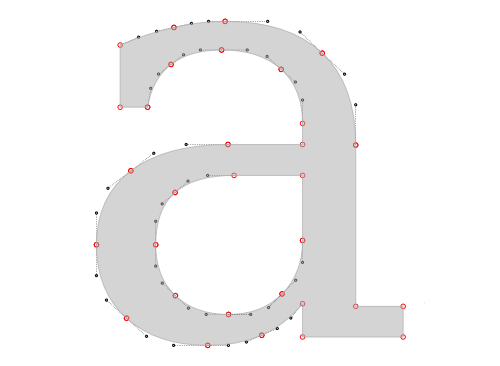
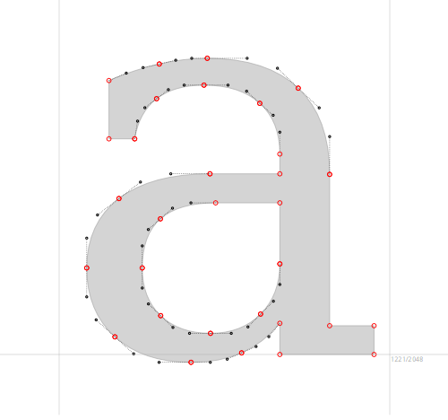
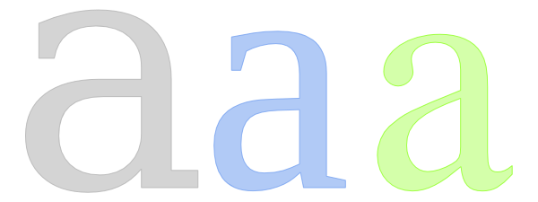
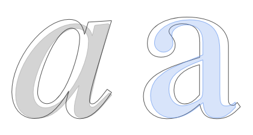
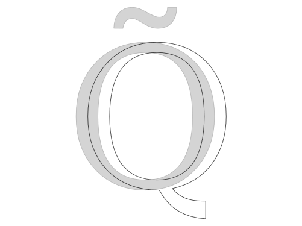

Comparison of same glyph in different fonts can be useful for both work and study.
To add a font to the list for comparison in the "Browse Fonts" sidebar click on the font's face, then go to "Compare" tab and click Add button.
Here is a typical view of Fontmatrix in glyphs comparison mode:
Now let's have a closer look at options available to you.
"Show" checkbox toggles visibility of a glyph rendering with a font that is currently selected in the list above.
"Fill" allows choosing one of predefined fills for a glyph or disabling colored fill by selecting "None".
"Points" will render points from which shape of a glyph is constructed, and "Controls" will render control points for these points:

"Metrics" will render baseline and display em size:

"Offset" moves a glyph horizontally to the right so that you can line up several glyphs without stacking them on top of each other:

But sometimes stacking is exactly what you want, especially when you are learning about differences between weights within one font family. In that case you can use offset to group weights of roman and italic faces:

Despite of using same huge area as in playground, amount of shifting is limited, so five glyphs are usually a limit for letters.
Finally, the "Keep in sync" checkbox makes sure you use same character for comparison between fonts, and slider and checkbox are a way you choose a character for rendering. If you want to compare two similar glyphs of the same font, add that font twice and uncheck "Keep in sync" to select second similar glyph:

{kind=link}